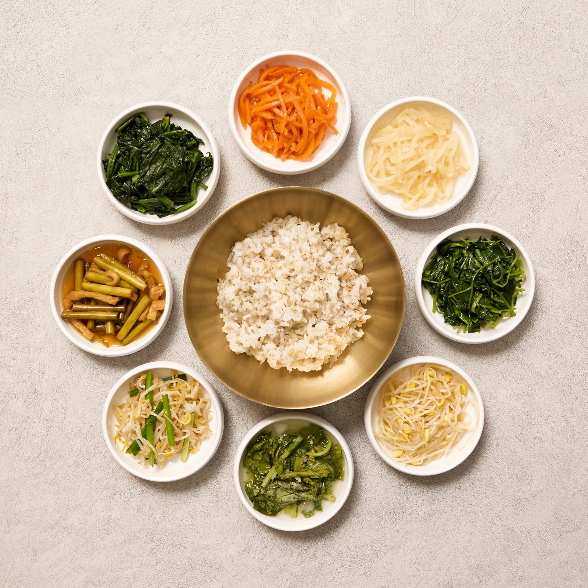
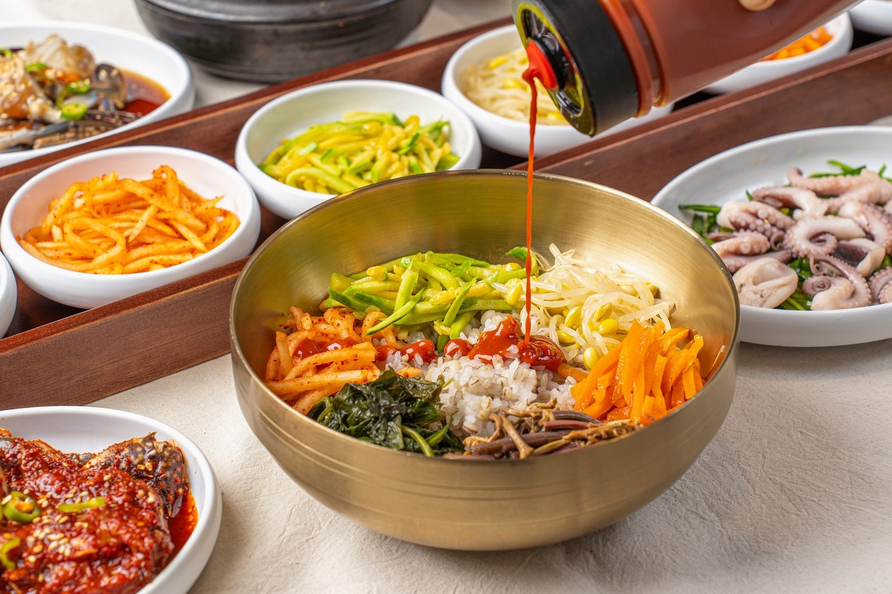
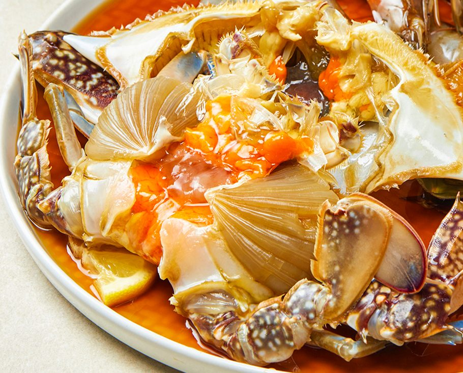
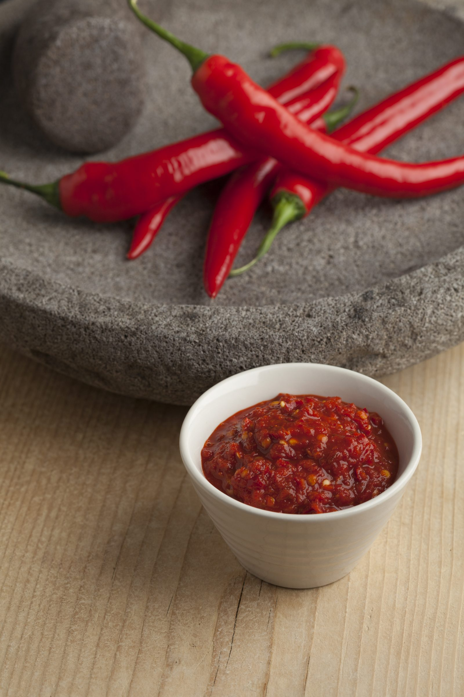
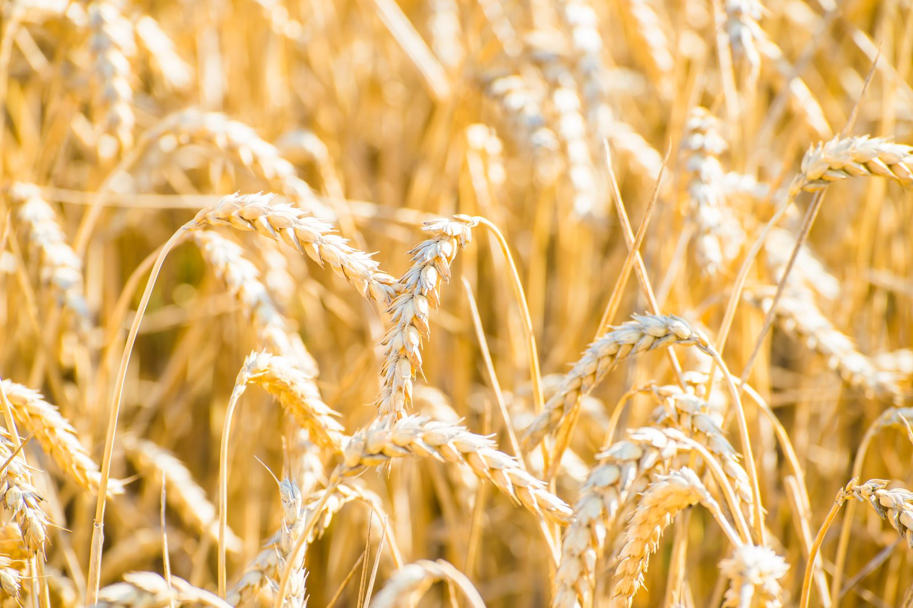
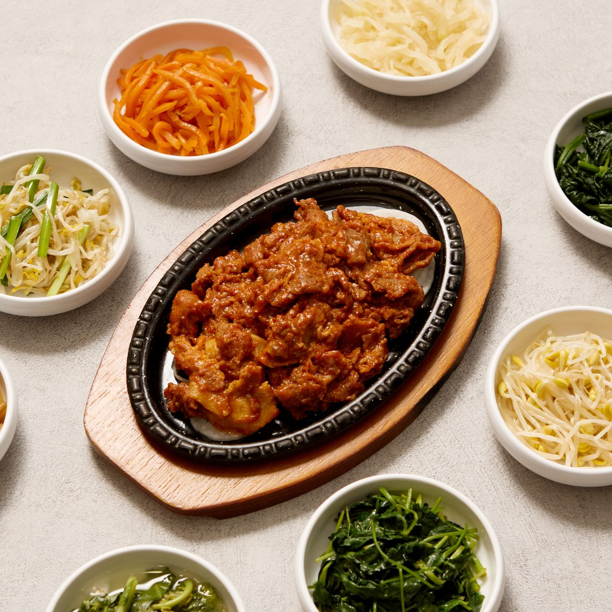

이야기 하나
인사동 보리밥,
A humble bowl that warms you through.
따뜻한 밥 한 그릇에 위로받을 수 있는 곳.
어느 날 점심, 소박한 보리밥 한 그릇이
마음까지 든든하게 바꿔드릴 수 있기를 바랍니다.
이야기 둘
매일 직접, 정성껏
Made by hand, every single day.
식탁에 오르는 모든 음식은
하나하나 우리 손으로 직접 만듭니다.
부담 없고 속이 편안한 한 끼를 위해
재료 손질부터 양념 하나까지
정성과 믿음을 담아 대접합니다.

이야기 셋
재료의 진심
Honest ingredients, honest taste.
깨끗하게 손질한 연평도 암꽃게부터 직접 담근 장까지
맛은 흉내 낼 수 있지만, 진짜는 다릅니다.

국내산 연평도 암꽃게

양념과 장

국내산 보리밥
이야기 넷
4게의 약속
Four promises we keep.
-
첫 번째 약속
깐깐하게
국내산 재료를 골라
매일 직접 손질합니다 -
두 번째 약속
든든하게
부담 없이 속이 편안한
한 끼를 차립니다 -
세 번째 약속
감칠맛나게
지나치지 않은 양념으로
본연의 풍미를 살립니다 -
네 번째 약속
불맛나게
마지막엔 불향을 입혀
그 맛을 완성합니다

제육정식
전 세계가 반한 인사동 제육볶음
공간
따뜻한, 한 끼
A warm meal from Insadong.
음식이 전하는 온기와 정직함.
단순한 식사가 아닌, 하루를 위로하고 채우는
한 끼가 되도록 마음을 담습니다.
초대
이 밥상을
함께 차릴 분을 찾습니다
Come set the table with us.
HACCP 인증 자체 공장 · 3無 (합성향료·감미료·착색료)
홍콩·미국 수출 · 인사동 본점에서 검증된 맛